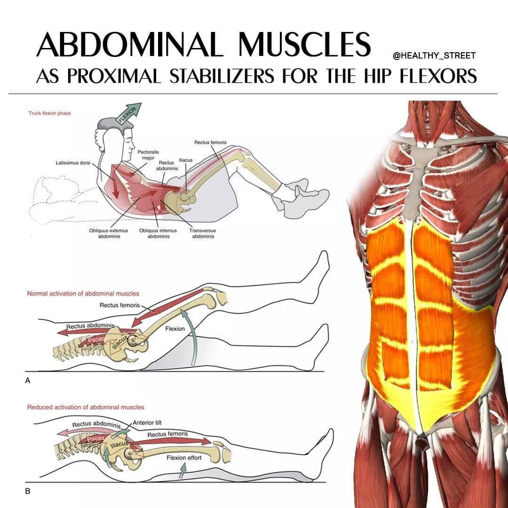

肌筋膜軟組織對人體造成的疼痛與影響，千萬不可輕忽！
肌筋膜軟組織對人體造成的疼痛與影響，千萬不可輕忽！
日常行走的動作對於髂腰肌的要求非常高，跑步更是如此，尤其常在練跑的跑者，要有健康、功能健全的髂腰肌，配合上腹直肌協同工作，才能穩定地從核心發力、傳遞力量到大腿小腿，完成頻繁抬腿的動作。
今晚來了一位20+歲年輕的馬拉松跑者，跑步時右側脅肋疼痛。從去年台北馬跑完後，只要一跑步大約3-5k的距離，就會痛到無法繼續跑，使得跑步訓練計畫完全中斷，到現在連快走都會痛起來。但重訓、游泳都不會引發疼痛。
內科腸胃鏡、膽結石都已排除可能性。
嘗試過物理治療針對右側脅肋緊張處按壓放鬆，當然止痛藥肌肉鬆弛劑也都不會少。
🧐🧐🧐🧐 我心想：完了，這什麼怪病？
診察脈象與PE後，發現核心特別弱，連帶影響臀大肌的發力，左側髂腰肌按壓特別痠，左臀大啟動反應也偏慢，關鍵是在左側腹直肌推尋到明顯的痛點，右側脅患處也明顯緊繃按壓疼痛。
腹直肌的痛點抑制影響了髂腰肌的功能表現，進一步造成右側脅肋的疼痛，所以在頻繁的跑步使用髂腰肌的過程，才會引發在右側脅肋的疼痛。
於是針對左側腹直肌與髂腰肌進行肌筋膜乾針針刺治療，LTR反應明顯，針刺後再做PE後測疼痛程度下降，肌群啟動均等，再次按壓右側脅肋患處，緊繃感直接軟掉，手指用力按壓幾乎不痛，也請患者自行尋找痛點測試，也找不太到原先的痛點。
好險安全下莊😅😅😅😅
肌肉筋膜軟組織造成的疼痛，在現代醫學裡是常被忽略的一環，肌筋膜的緊繃、無力、代償、抑制，除了產生疼痛，也很常影響到肌群、生物力學上的功能表現！
不管是在日常生活的動作，或是專項運動的表現，肌筋膜的問題佔了大部分，而透過脈象的偵測、PE的檢查，找出病因所在，再透過乾針或手法的治療，才能更全面性地處理疼痛，達到事半功倍的診療效果！
太初中醫診所 東門中醫
中醫師 黃彥鈞
